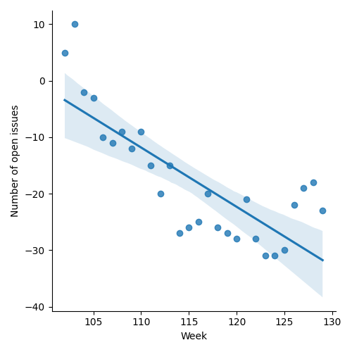
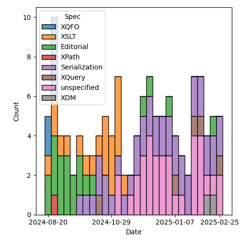
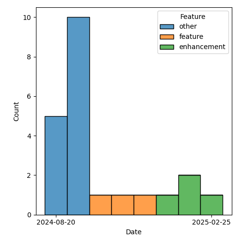

QT4 CG Meeting 112 Agenda 2025-03-04
Meeting index / QT4CG.org / Dashboard / GH Issues / GH Pull Requests
Table of Contents
Draft Minutes
Summary of new and continuing actions [0/4]
[ ]QT4CG-082-02: DN to work with MK to come to agreement on the fn:ranks proposal[ ]QT4CG-107-05: JLO and DN to consider a proposal for system defined records.[ ]QT4CG-110-04: JK to consider a PR for #366, xsl:use-package with xsl:package-location[ ]QT4CG-112-01: JLO to propose a concrete example that uses “.” in a ~%method~s.
1. Administrivia
1.1. Roll call [12/13]
Regrets: JK.
[X]David J Birnbaum (DB)[X]Reece Dunn (RD)[X]Sasha Firsov (SF) [-0:30][X]Christian Grün (CG)[ ]Joel Kalvesmaki (JK)[X]Michael Kay (MK)[X]Juri Leino (JLO)[X]John Lumley (JWL)[X]Dimitre Novatchev (DN)[X]Wendell Piez (WP)[X]Ed Porter (EP)[X]Bethan Tovey-Walsh (BTW)[X]Norm Tovey-Walsh (NW). Scribe. Chair.
1.2. Accept the agenda
Proposal: Accept the agenda.
Accepted.
1.2.1. Status so far…
These charts have been adjusted so they reflect the preceding six months of work.

Figure 1: “Burn down” chart on open issues

Figure 2: Open issues by specification

Figure 3: Open issues by type
1.3. Approve minutes of the previous meeting
Proposal: Accept the minutes of the previous meeting.
Accepted.
1.4. Next meeting
The next meeting is scheduled for 11 March 2025.
Note: The QT4CG meeting is scheduled on UK/European civil time. The United States switches to daylight saving time on 9 March 2025, so the meetings of 11, 18, and 25 March will be one hour later there (12:00 EDT, 09:00 PDT) until the UK/Europe also switches (on 30 March 2024).
Regrets: WP, RD.
1.5. Review of open action items [4/7]
(Items marked [X] are believed to have been closed via email before this agenda was posted.)
[ ]QT4CG-082-02: DN to work with MK to come to agreement on the fn:ranks proposal[ ]QT4CG-107-05: JLO and DN to consider a proposal for system defined records.[X]QT4CG-110-03: JWL to consider writing a PR for issue #322, xsl:record instruction[ ]QT4CG-110-04: JK to consider a PR for #366, xsl:use-package with xsl:package-location[X]QT4CG-111-01: MK to review the editorial comments on PR #1837 and then merge the PR.[X]QT4CG-111-02: MK to fix the typo$in as xs:double+and1.3. 1.4that middle “.” should be a “,”[X]QT4CG-111-03: MK to add a%methodexample that uses the arrow syntax.
1.6. Review of open pull requests and issues
This section summarizes all of the issues and pull requests that need to be resolved before we can finish. See Technical Agenda below for the focus of this meeting.
1.6.1. Blocked
The following PRs are open but have merge conflicts or comments which suggest they aren’t ready for action.
1.6.2. Merge without discussion
The following PRs are editorial, small, or otherwise appeared to be uncontroversial when the agenda was prepared. The chairs propose that these can be merged without discussion. If you think discussion is necessary, please say so.
- PR #1855: 1771 Add option for deep-equal to consider map order
- PR #1850: Actions from meeting 111
- PR #1849: Reduce the indentation in the ToC
- PR #1839: Relax the return type of the Invisible XML parsing function
- PR #1838: Attempt to add change markup in collapsed ToC
Proposal: merge without discussion?
Accepted.
1.6.3. Substantive PRs
The following substantive PRs were open when this agenda was prepared.
- PR #1853: 1845 Revised design of methods to use . rather than $this
- PR #1835: add zero-width assertions to regular expressions
- PR #1819: 451 Multiple schemas in XSLT
- PR #1801: 1798 Function fn:function-identity
- PR #1778: 1456 Lookup expressions filtered by type
- PR #1740: 1725b Further elaboration of duplicates handling in maps
- PR #1735: 1341 Drop $position callback from many functions
2. Technical agenda
2.1. Review of pull requests
I don’t actually think we’ll get through all of these. Let’s reserve 15 minutes at the end of the call for issue triage. See the list below.
2.1.1. PR #1853: 1845 Revised design of methods to use . rather than $this
See PR #1853
- MK: This was a response to DN’s observation that we could find a better syntax
than
$thisfor referring to the record used by the function.- … The static context is no longer changed.
- … The captured context for an inline function no longer includes anything static.
- … When you do the lookup you get a new function with a new identity and it’s implementation defined if that’s cached.
- … The option of invoking the function directly is removed because there’s no other way to bind the context.
- … Focus functions can’t be annotated as methods.
- … Behavior can no longer be defined in terms of standard functionality so
there’s a new
bind-focusprimitive that sets the captured context of the function body.
- RD: This means that if you use something that changes the context then that part of the expression won’t be able to access the map.
- MK: Yes, you’d have to bind a variable to “.” first.
- JWL: Looking at the example with the area method; I’d be able to put a “.” in front of the
?, yes? - MK: Yes.
- JWL: You could actually do something with “.” if you wanted to that might be worth mentioning.
- JLO: You could use map values here.
- MK: Yes, something that works generally on maps. If you can suggest a concrete example, that would be handy.
Some discussion of what the example might be.
ACTION: QT4CG-112-01: JLO to propose a concrete example that uses “.” in a ~%method~s.
- MK: One thing that might be useful is
. instance of …. - JLO: Is it correct that you’re no longer allowed to use
%methodon any function? - MK: You can use it on any inline function; it’s no longer allowed on declare function.
- DN: I think that if the example had a key property that was
sides, you could have a sum of the sides. I think that’s the example JLO was after.- … That could be combined with checking the type.
- DN: I want to thank MK, this is everything that I wanted. I can now make a pull request for a generator. I also wanted to say that we have a very convenient way of expressing recursion in XPath.
- JWL: If you take the rectangle and you wanted to use
map:values, you’d have to predicate out the functions, because they’re also members of the map. - MK: Yep.
- JLO: I remember seeing that function items don’t have a context item.
- MK: Generally, no, but they do for focus functions.
- CG: In that context, …
CG shares his screen.
- CG: I like the current solution, but I opened #1847 to have some discussion.
- … One other approach would be to allow the user to choose the name.
- … You could have a list of arguments or not.
(See examples in #1847.)
- CG: This syntax would look very similar but it would need additional parentheses.
- … This would allow you to specify more type information.
- … But perhaps these comments don’t apply any more.
- MK: I thought this was a good idea, but not really worth the additional complexity.
Proposal: accept this PR.
Accepted.
2.1.2. PR #1801: 1798 Function fn:function-identity
See PR #1801
DN introduces the PR.
- DN: This is a new function,
fn:function-identity.- … We have quite recently added function identity to the data model.
- … For all other properties in the data model, we have accessor functions. So I’ve added it.
- … Why do we need this? We would need this if we wanted to record the results of calling different functions with different tuples of arguments. This allows us to put the function in the map.
- … We might be able to add parameters to apply functions for caching.
- CG: Thanks DN. I guess the result is implementation-dependent.
- DN: I think this is more a question about the data model property “identity”.
That’s something abstract and implementors can do whatever they want.
- … But any function, at the moment of its creation, gets a unique identifier.
- … There aren’t any tests here, they would just test identity.
- CG: I think in practice, implementations may behave differently because of this fact.
- DN: Somewhere in the data model we could emphasize that the identity property
of functions is not persistent. It could be totally different between executions.
- … We could define persistent identities for system defined functions, but that’s not part of this proposal.
- CG: The point I was trying to make is that if you have two functions that return 2, then one implementation may say it’s the same function and another implementation might say they are different.
- DN: My understanding is that if the functions are created separately, they will get different values for their identities.
- MK: There’s an element to which it’s implementation define. If you’ve
partially applied the matches function twice with the same regular expression,
do you get the same function back or different function? That’s implementation
defined.
- … There are a number of editorial comments. The substantive technical
comment is that we don’t say what happens if you pass a map or array to this
function.
- … We have tried to avoid having identities for maps and arrays.
- … There are a number of editorial comments. The substantive technical
comment is that we don’t say what happens if you pass a map or array to this
function.
- DN: The paragraph that says that maps and arrays don’t have identity has been removed. So now they now have identity.
- MK: It’s a gap we have to fill.
- JLO: My question is about the naming of the function itself. The function name
gives me the impression that it’s a comparison function. I think it would be
better if it was
fn:function-identifier. - DN: I’m following the conventions for naming functions that return data model properties.
Some discussion of the name of the function.
- MK: For nodes, we use
fn:generate-idand we regard the identity as much more abstract. I’m a little bit in favor of having that separation. I don’t think it has much practical significants, but keeping it aligned with what we do for nodes might make sense. - CG: If we merge this PR, then it says maps and arrays have identity and that will be completely implementation defined.
Some discussion of what identity might mean for maps and arrays.
- WP: I’d like to pick up what MK said about generate id and node identity. I think that’s helpful. I’d like to make sure that advantage translates over.
- NW: I wonder if we should just allow
fn:generate-idto take a function as an argument. - MK: That raises the question of whether it shoudl be extended to atomic values…
Proposal: accept this PR.
Accepted.
- MK: I think it may need more work in the future.
2.1.3. PR #1735: 1341 Drop $position callback from many functions
See PR #1735
- MK: A controversial one…
- MK: It’s a case really of discussing the principles rather than the details.
MK reviews the comments in the actual PR: https://github.com/qt4cg/qtspecs/pull/1735
- MK: Rather than have a position argument, have a function that can return a
tuple of items from the list with their index. This is simpler for users who
don’t need the functionality.
- … I did leave the
$positionargument for some functions where I thought it was very likely to be used.
- … I did leave the
- JLO: I’m against dropping the position. It doesn’t complicate anything for anyone who doesn’t use it. It’s an optional argument. I make heavy use of it. I think introducing a new function with tuples greatly confuses things. You’d also lose type safety.
- DN: I think this is a great step forward. It greatly simplifies the signatures
for the functions. The new function
fn:numbered-itemsmakes all of these examples much shorter and more concise. Also: I searched extensively for any use of positional arguments. There are almost none. This is an honest and fair reflection of the facts about our functions.- … To many people outside of XPath, folks with a functional backgrounds,
there is no such things as
$positionarguments. - … Having a function is much better than having to add another argument to a function.
- … To many people outside of XPath, folks with a functional backgrounds,
there is no such things as
- CG: I think there’s strong resistence to removing this feature. First, we
introduced this a couple of years ago, so it’s been around for a while. It may
be worth looking at features we want to remove and do it now rather than later.
But of course, the spec isn’t finished so we still can remove it.
- … Our users have started using the position argument. We’ve talked a lot about pros and cons in the past. I think the numbered items function is a nice addition, but not as a replacement for the current syntax.
- … In many use cases the result of using the position argument is much more concise than writing something else.
- … If the functions become too bulky, you’d be better off with for/let etc.
- … Returning something from maps also has problems for type safety.
- … And if we’re going to remove it form some functions, we should remove it from all functions.
- … If users think that the position argument is useful, we shouldn’t be too paternalistic.
- RD: I’m wondering if there are performance issues to consider. I’m wondering if numbered items would make the resulting expression non lazy, for example. Would that force the processor to expand the range into a full sequence?
- MK: I don’t think there are any concerns in that area.
- CG: There are many ways to optimize for the position argument, but I can
imagine that it would be more difficult to find out if a map was the result of
fn:numbered-items. And if you write it wrong, you’ll just get an empty sequence instead of an error. - JLO: For fold, if it’s too complex, I think the positional arguments can
easily be done with an additional field in the aggregator. But for
for-eachit’s really so fundamental. - DB: I don’t have a strong opinion about how to represent the ordered items,
but I hesitate about the name
numbered-itemsbecause the name doesn’t suggest sequential, integer items. - DN: I agree with CG that if we need to remove some feature that complicates
that complicates things, it’s do it earlier.
- … The argument about type safety maybe doesn’t apply to records that aren’t extensible.
- … I still think that users are going to find complicated function signatures more difficult to use. This simplifies the documentation in many places.
- … In the .NET function library they do not have a
$positionarguments.
- CG: I think we won’t find an answer to what’s best. There are just two different approaches.
- … The basic semantics of lookup operators is that they don’t return an error if a key doesn’t exist.
- RD: In languages like C#, you have mutable variables so it’s easy to construct
things like position in a loop. It’s a lot trickier to compute the position value in code.
- … Having the position argument gives it parity with FLOWR expressions.
The chair observes that we’re strongly dividied here. We’ll have to try to make a decision next week, one way or the other.
3. Any other business
None heard.